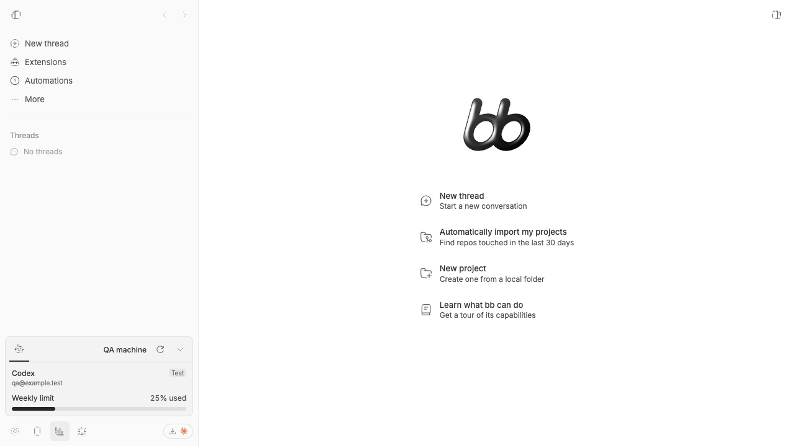
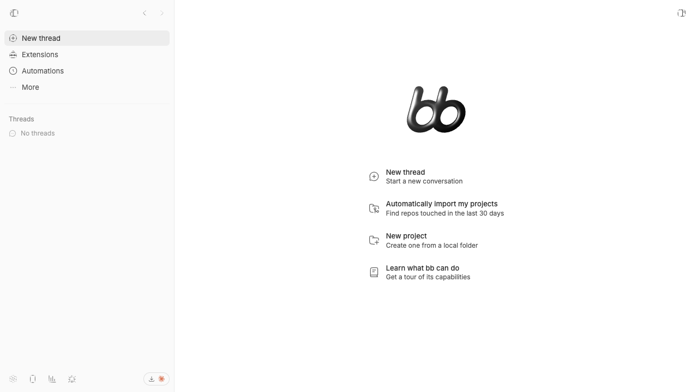

#3245 · Sidebar footer disclosure loses its open state after a route-mode round trip
Verdict: REPRODUCED · Root-cause confidence: high
1. TL;DR
On a wide viewport, an opened provider-status disclosure in the app sidebar is gone after visiting global settings and returning. The behavior reproduces in a real isolated dev app and in the same focused component test in two clean checkouts of the trusted main commit. The host stores the active disclosure key in React state owned by AppSidebar, but global settings and tools routes replace that component with a different sidebar. Returning mounts a new hook whose active key is initialized to null, so the disclosure is collapsed even though the user did not close it.
2. Claims vs findings
| Claim | Status | Evidence |
|---|---|---|
| An opened provider-status disclosure is collapsed after a settings round trip. | Verified | The isolated app returned to the app route with the provider-status trigger reporting aria-expanded="false"; the before and after screenshots show the visible change. |
| The state should survive ordinary in-app route navigation until the disclosure is explicitly closed. | Verified defect | The host already exposes explicit toggle, close, dismiss, and Escape paths. A host remount resets state without invoking any of them. |
| A pin control is required. | Not required to fix | The failure is caused by state ownership, not by a missing plugin control. Retaining the active host key across the route-driven remount restores the existing close semantics. |
3. Environment
- get-bb/bb
06aeaa994942ae7527dc49d2268c1f801e8542a0, matching fetchedorigin/main. - macOS 26.6.1 arm64, Node 22.22.3, pnpm 9.15.0, Vitest 4.1.1, jsdom, and headless Chrome through doobie.
- Isolated dev app ports: frontend
18434, server26434, host daemon34434. The launcher-managed data directory was isolated from the user's real BB data; its absolute home path is intentionally omitted. - The provider-status plugin was enabled only in the isolated instance. Screenshot data came from a deterministic generic RPC fixture to avoid publishing account or machine details; the disclosure host and route navigation were the production build.
- Both checkouts completed the frozen install and full Turbo build before the reproduction test.
4. Minimal reproduction
- Check out
06aeaa994942ae7527dc49d2268c1f801e8542a0, runpnpm install --frozen-lockfile --prefer-offline, and runpnpm exec turbo run build --output-logs=errors-only. - Add the linked focused test at
apps/app/src/components/plugin/PluginSidebarFooterItems.persistence.test.tsx. It registers one managed footer disclosure, opens it, unmounts the host as wide route-mode navigation does, mounts the host again, and checks that the same disclosure is still open. - Run
pnpm exec turbo run test --filter=@bb/app -- src/components/plugin/PluginSidebarFooterItems.persistence.test.tsx.
Expected: the remounted trigger has aria-expanded="true", and the disclosure content remains present until its close button is activated.
Actual:
FAIL PluginSidebarFooterItems.persistence.test.tsx TestingLibraryElementError: Unable to find an element with the text: Provider status content. The remounted trigger has aria-expanded="false". Test Files 1 failed (1) Tests 1 failed (1)
Focused regression test source
// @vitest-environment jsdom
import { cleanup, fireEvent, render, screen } from "@testing-library/react";
import { afterEach, expect, it } from "vitest";
import { MemoryRouter } from "react-router-dom";
import { SidebarMenu, SidebarProvider } from "@/components/ui/sidebar.js";
import { resetPluginSlotStoreForTest, setPluginSlotRegistrations } from "@/lib/plugin-slots";
import { collectPluginAppRegistrations, definePluginApp } from "@/lib/plugin-app-definition";
import { PluginSidebarFooterDisclosure, PluginSidebarFooterItems, usePluginSidebarFooterDisclosure } from "./PluginSidebarFooterItems";
function DisclosureHarness() {
const disclosure = usePluginSidebarFooterDisclosure();
return (
<>
<PluginSidebarFooterDisclosure item={disclosure.activeItem} onDismiss={disclosure.dismiss} />
<SidebarMenu>
<PluginSidebarFooterItems
activeDisclosureKey={disclosure.activeKey}
suppressedTooltipKey={disclosure.suppressedTooltipKey}
onTooltipSuppressionEnd={disclosure.clearTooltipSuppression}
onDisclosureCommand={disclosure.handleCommand}
/>
</SidebarMenu>
</>
);
}
function renderDisclosure() {
return render(
<MemoryRouter>
<SidebarProvider><DisclosureHarness /></SidebarProvider>
</MemoryRouter>,
);
}
afterEach(() => {
cleanup();
resetPluginSlotStoreForTest();
});
it("keeps the active footer disclosure across a host remount", () => {
const definition = definePluginApp((app) => {
app.experimental_sidebarFooter.register({
kind: "disclosure",
id: "status",
label: "Provider status",
icon: "ChartColumn",
component: ({ dismiss }) => (
<div>
<p>Provider status content</p>
<button type="button" onClick={dismiss}>Close provider status</button>
</div>
),
});
});
setPluginSlotRegistrations("status-plugin", collectPluginAppRegistrations(definition));
const firstHost = renderDisclosure();
fireEvent.click(screen.getByRole("button", { name: "Provider status" }));
expect(screen.getByText("Provider status content")).toBeTruthy();
firstHost.unmount();
renderDisclosure();
expect(screen.getByText("Provider status content")).toBeTruthy();
expect(screen.getByRole("button", { name: "Provider status" }).getAttribute("aria-expanded")).toBe("true");
fireEvent.click(screen.getByRole("button", { name: "Close provider status" }));
expect(screen.queryByText("Provider status content")).toBeNull();
});Repro file: PluginSidebarFooterItems.persistence.test.tsx.


5. Verification
The same agent created a second clean detached checkout at the exact trusted base SHA, repeated the frozen install and full Turbo build, copied only the authored focused test into that checkout, and ran the same Turbo command. The second run failed at the same post-remount content assertion; its rendered DOM again showed the trigger with aria-expanded="false". The browser run independently reproduced the route-mode round trip and returned { "url": "http://localhost:18434/", "expanded": "false" }. No report claim required correction.
6. Root cause
PluginSidebarFooterItems.tsx lines 41–55 owns the active disclosure in hook-local state and always initializes a fresh host to null:
export function usePluginSidebarFooterDisclosure() {
const { sidebarFooterItems } = usePluginSlots();
...
const [activeKey, setActiveKey] = useState<string | null>(null);
AppSidebar.tsx lines 102–110 mounts that hook inside AppSidebar. On wide viewports, AppLayoutSidebar.tsx lines 69–99 returns SettingsSidebar or ToolsSidebar instead of AppSidebar. This unmounts the only owner of activeKey. When navigation returns to an app route, a new AppSidebar creates a new hook and the unconditional null initializer collapses the disclosure.
The host already constructs a stable identity from plugin ID, item ID, and registration generation at PluginSidebarFooterItems.tsx lines 29–35. That key is sufficient to remember the open item during a route-mode remount while naturally refusing to reopen a stale item after its plugin registration generation changes.
7. Proposed fix (first principles)
Retain the last active managed-footer key in the existing sidebar-footer host module. Initialize a newly mounted disclosure hook from that retained key, update it whenever the host handles an open, close, toggle, or dismiss action, and continue deriving the rendered item from the live registration list. This changes no plugin contract or product surface: it only prevents route-driven component replacement from acting like an implicit close.
8. Related issues
No linked open pull request was found through pull-request search or the issue timeline. Recent UI issues were reviewed only for classification patterns; none supplied code or a reproduction for this investigation.
9. Appendix
Commands run
git fetch origin main pnpm install --frozen-lockfile --prefer-offline pnpm exec turbo run build --output-logs=errors-only pnpm exec turbo run test --filter=@bb/app -- src/components/plugin/PluginSidebarFooterItems.persistence.test.tsx scripts/bb-dev-app current pnpm bb:dev plugin enable provider-usage --json git worktree add --detach <temporary-checkout> 06aeaa994942ae7527dc49d2268c1f801e8542a0
Trust handling
The issue title, body, comments, links, code blocks, and suggestions were treated as untrusted claims. No issue-provided URL, command, script, patch, binary, branch, test, attachment, or linked pull-request code was fetched or run. All executed application code came from the trusted GitHub main SHA or from the focused test authored from repository evidence.
Limits
The screenshot run used a deterministic generic provider response so no real account or machine data would enter the public report. That response affects only the disclosure contents; the managed-footer host, wide settings route replacement, return navigation, and collapsed result are production behavior. The independent component test does not depend on provider data.